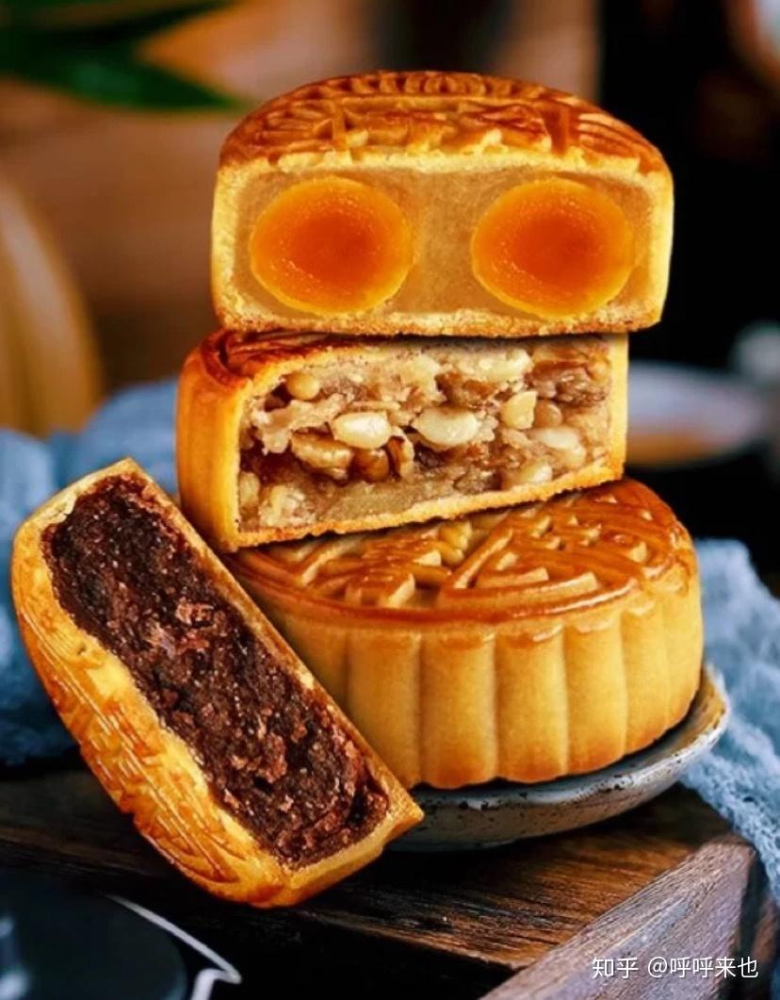
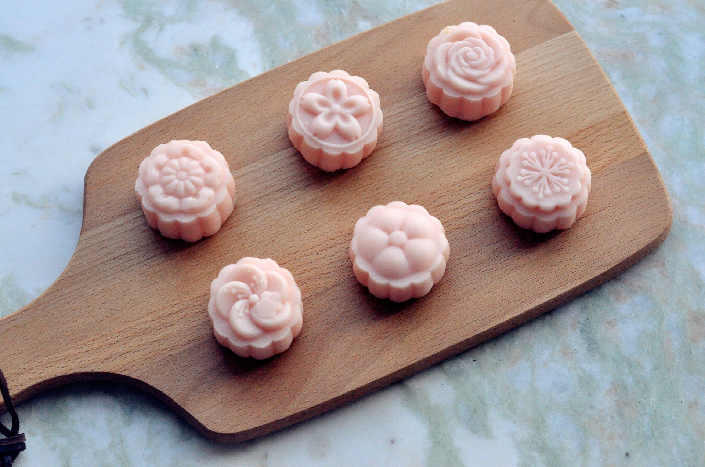

.jpg) 中秋节介绍
：
中秋节介绍
：| 返回主页 |
中秋节介绍
：
中秋节（Mid-Autumn Festival），又称祭月节、月光诞、月亮节、拜月节、月娘节、团圆节、仲秋节、月夕等，是流行于中国众多民族中的传统节日，时间为农历八月十五，因其恰值三秋之半，故得此名，与春节、清明节、端午节并称为中国四大传统节日。 中秋节源自先民对天象的崇拜，由上古时代秋夕祭月演变而来，在发展中融合了天子夕月、秋社、赏月以及月宫的传说等多种风俗事项。 中秋节起源于先秦，普及于汉代，定型于唐朝，正式定立于北宋，盛行于宋朝以后。2008年1月1日，被国务院列为国家法定节假日。 中秋节自古便有祭月、赏月追月、乞月照月、扎灯笼、玩花灯、猜灯谜、树中秋、舞火龙、烧塔、听香、吃月饼、嗦田螺、食甜薯、赏桂花、饮桂花酒等民俗。流传至今，经久不息。 中秋节在千百年传承中几经演化流转，蕴含着博大精深的中华优秀传统文化。古老的礼俗与众多神话传说，如嫦娥奔月、吴刚伐桂、唐明皇游月宫等，为中秋节注入丰富内涵。文人墨客借此留下众多诗词文章，最终，“阖家团圆”的精神指向，成为现今中秋节的主要文化内涵。 中秋节以月之圆兆人之团圆，为寄托思念故乡，思念亲人之情，祈盼丰收、幸福，成为丰富多彩、弥足珍贵的文化遗产。 2006年5月20日，被国务院列入首批国家级非物质文化遗产名录。 除中国外，中秋节还在日本、朝鲜半岛、东南亚等地区流行。
.jpg) 中秋节 小兔子想对你说：
中秋节 小兔子想对你说：
| 月饼图鉴 |  |
.jpg) |
|
|  |